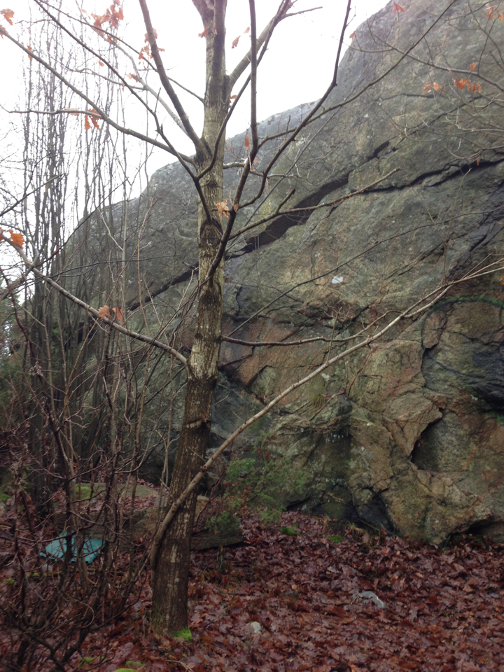
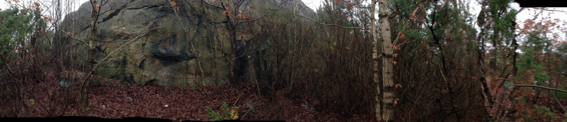
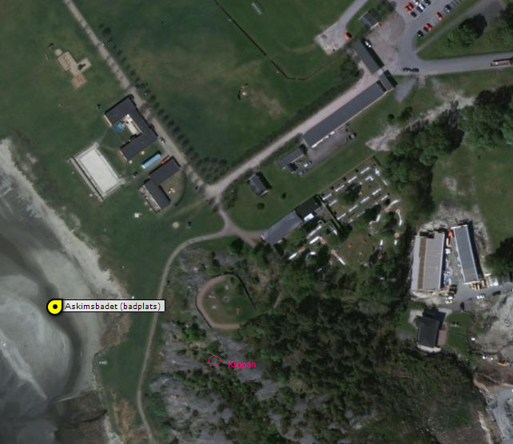
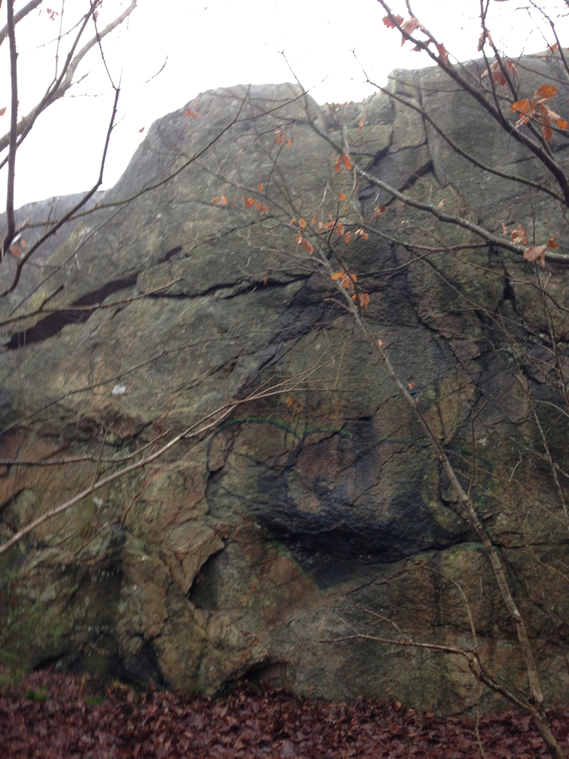

En liten klippa vid Askimsbadet, 8-9 meter hög, 30 meter bred. 4-5 linjer.
Patrik Alseby klättrade några leder här 1991. Han visade klippan för några, men klippan föll i glömska. Men om man ändå är vid Askimsbadet för att bada kan kanske man åtminstone vill gå och titta på klippan, även om man inte tänker klättra någon utav lederna.
Askimsbadet är ett kommunalt bad med moderna faciliteter som handikappbrygga, omklädningsrum, duschar, bangolf och annat. Klippan är 100 meter från badet och klippan är synlig från badet, dock är merdelen av klippan dold av den täta skogen så man riskerar inte bli störd av andra badgäster.
Kör till Askimsbadet, parkera. Från parkeringen - passera röd byggnad "Askims bangolf och beachcafé", gå upp till och igenom stenmursterrassen på vänster sida och fortsätt in i skogen, ta riktning mot den vertikala vägg ni ser ifrån stranden ca 100 meter bort.
Klippan finnns ej beskriven i någon modern förare. Dock har Patrik Alseby antagligen FA på de flesta linjer.
Kategori:vertikalt
kategori:Saknar skiss
kategori:Saknar vägbeskrivning
kategori:Saknar leder
kategori:Saknar koordinater
kategori:Saknar skrivarformatering
Category:Göteborg